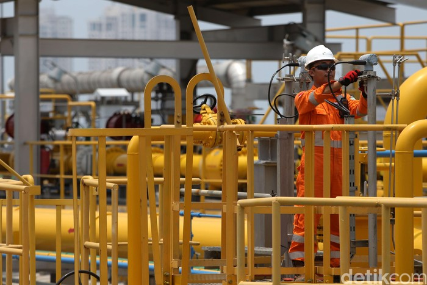
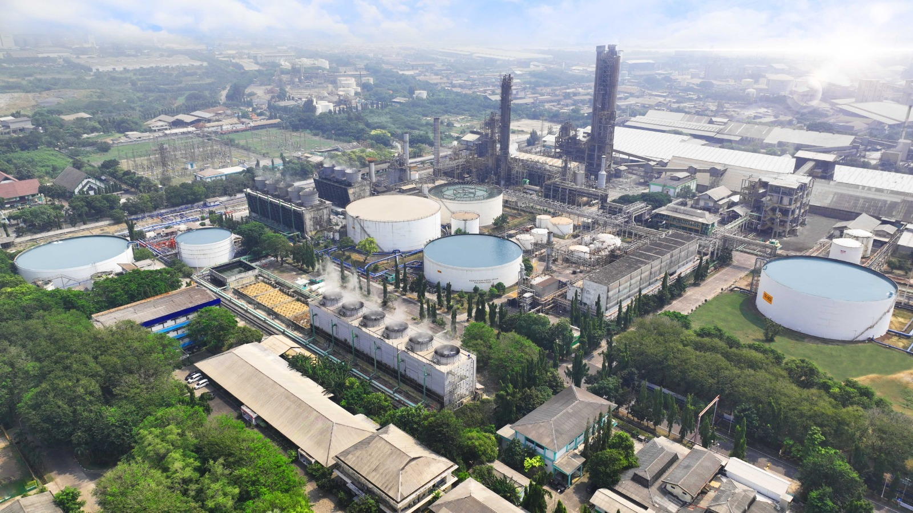
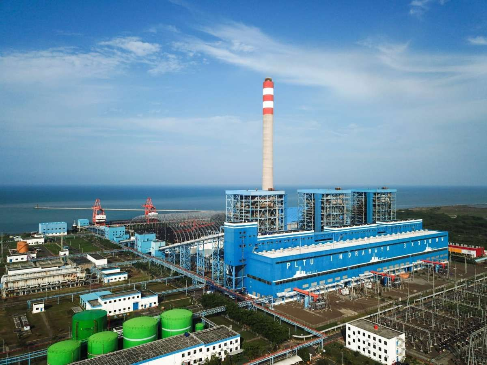

Beranda / Operasi
Wilayah Kerja & Produksi
Menjelajahi wilayah operasi lepas pantai barat Madura, fasilitas penerimaan gas di Gresik, dan kinerja produksi PHE WMO.
Wilayah kerja
Blok WMO terletak di lepas pantai barat Madura, Laut Jawa. Operasi lepas pantai melibatkan anjungan dan sistem pengeboran, dengan kontrak yang berlaku hingga 6 Mei 2031.


Onshore Receiving Facility (ORF)
ORF berada di Gresik, Jawa Timur. Fasilitas ini menerima dan memproses gas dari lepas pantai, lalu menyalurkannya melalui sistem metering ke pelanggan seperti PGN dan PJB.
- Lokasi: Jalan Amak Kasim, Desa Sidorukun, Gresik
- Penerimaan dan pemrosesan gas dari lepas pantai
- Metering penyaluran gas ke pelanggan
Data produksi
Rata-rata produksi tahun 2025 (data bruto tingkat wilayah kerja). Perbarui angka secara berkala.
1.699BOPD minyak & kondensat
26,3MMSCFD gas
Rekor historis
Pada Februari 2012, produksi minyak pernah mencapai 15.500 BOPD dan gas 149 MMSCFD.
Pelanggan gas

PT Petrokimia Gresik
PT Pembangkitan Jawa-Bali (PJB)